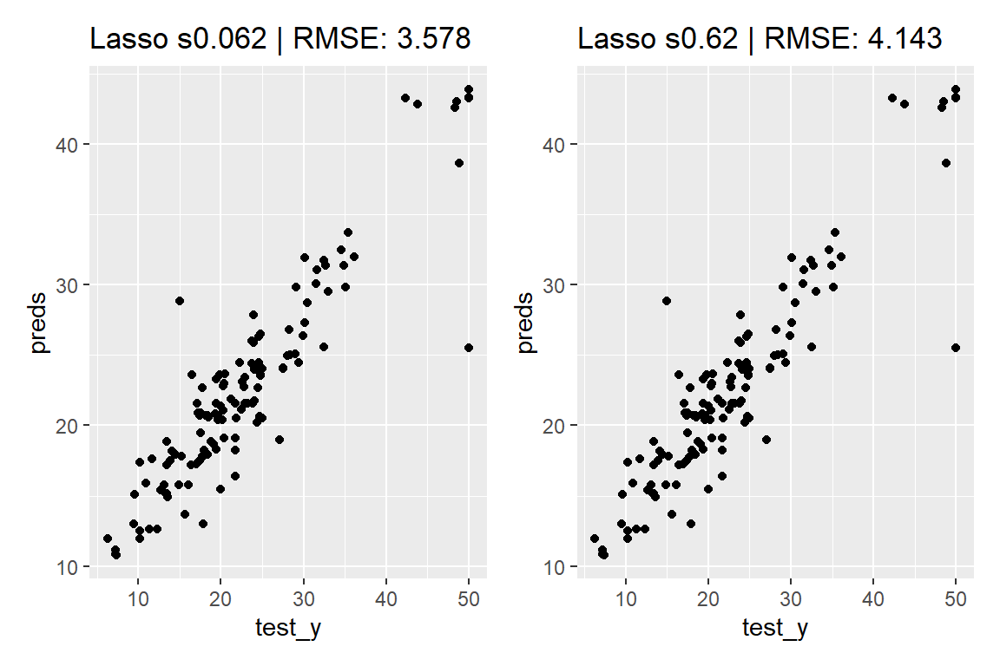
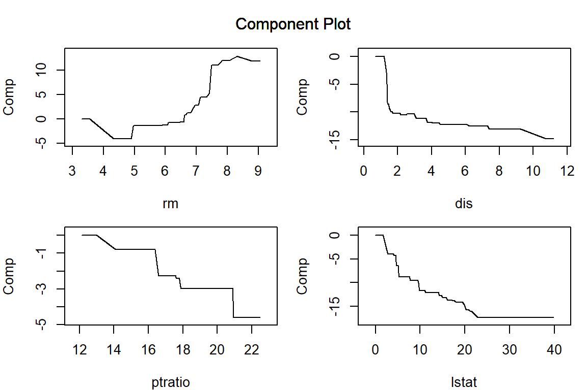
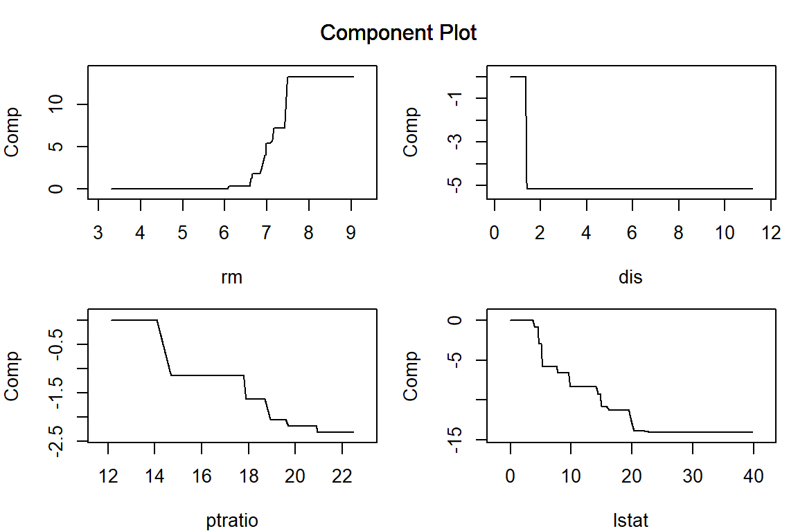
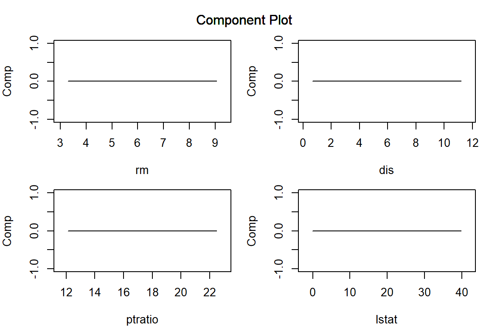
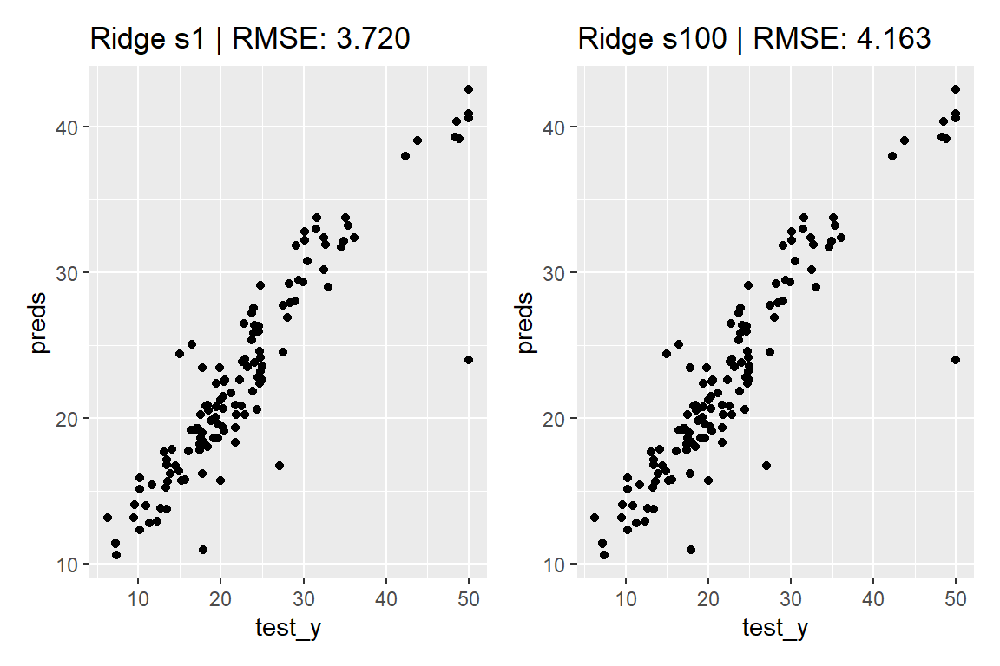
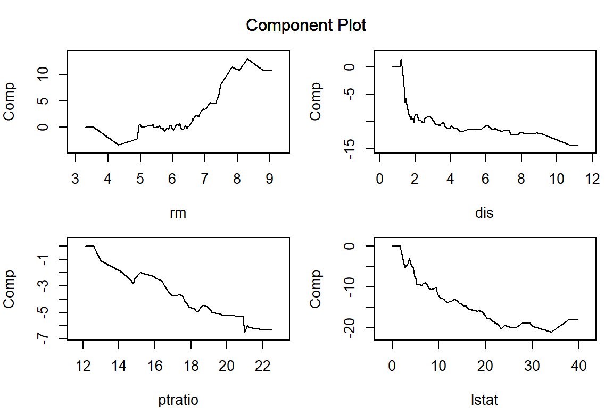
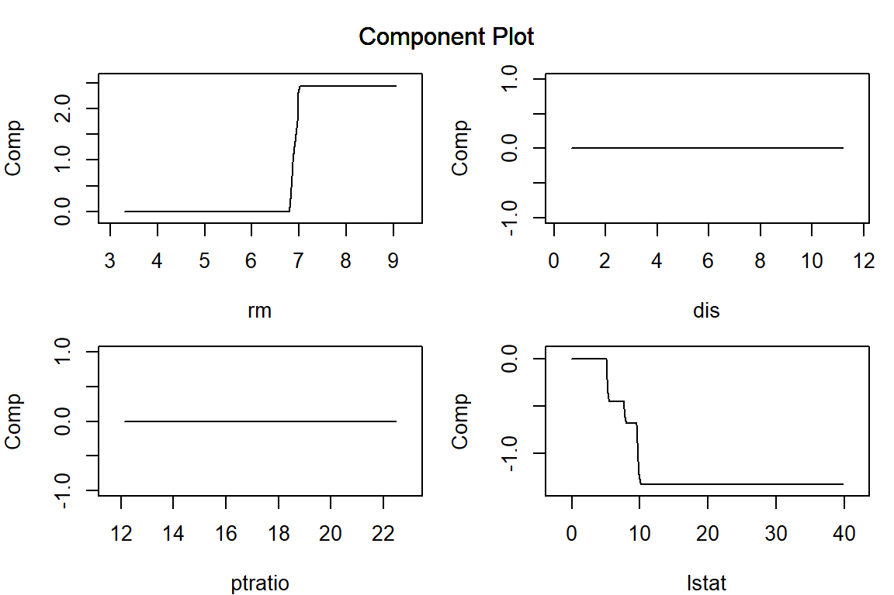
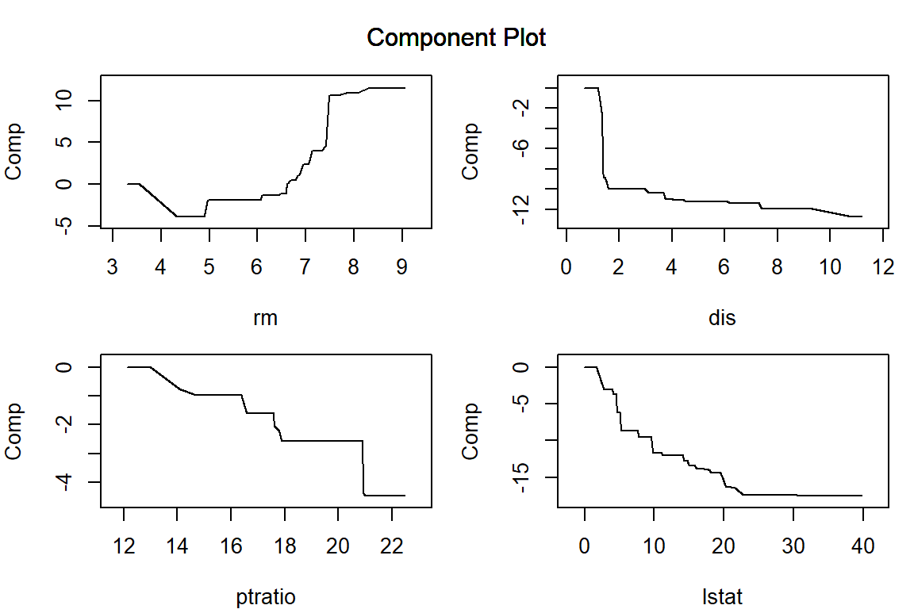
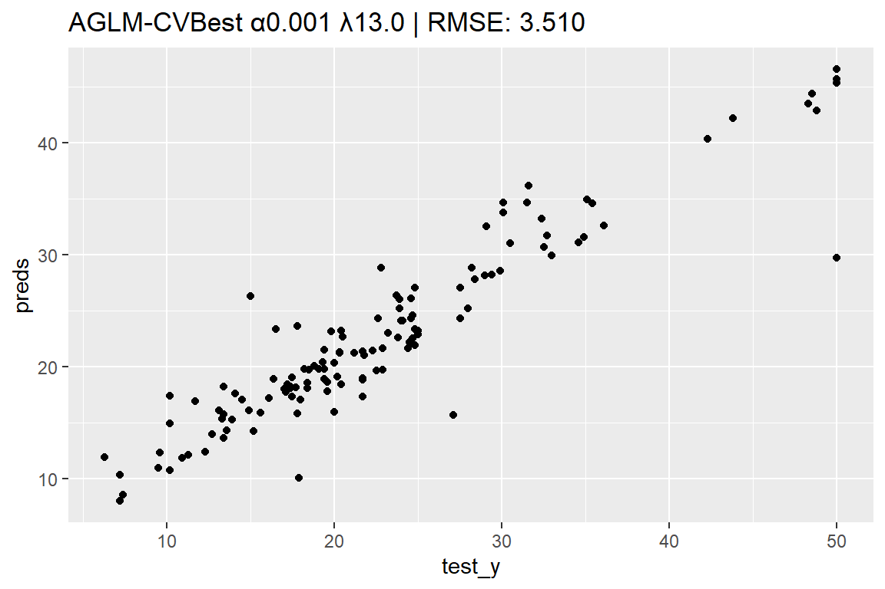
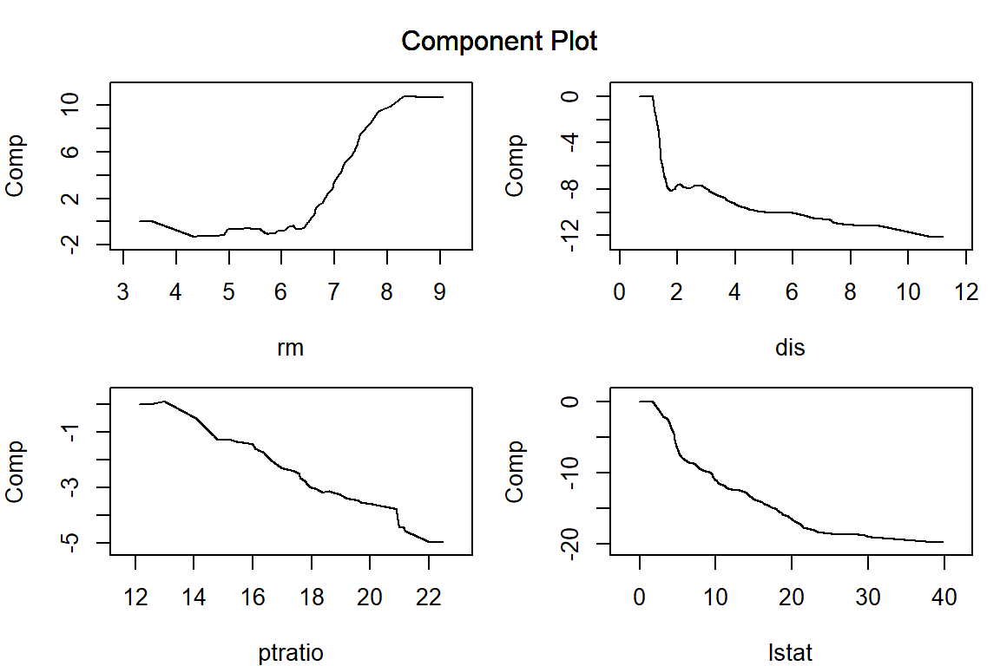

library(ggplot2)
library(MASS) # Bostonデータセットを利用します
set.seed(42)
# 学習用データと評価用データを分割します。
split_data <- rsample::initial_split(Boston)
# 学習用データを説明変数（デザイン行列）と目的変数に分割します。
train <- rsample::training(split_data)
train_X <- dplyr::select(train, -medv)
train_y <- train$medv
# 評価データを説明変数と目的変数に分割します。
test <- rsample::testing(split_data)
test_X <- dplyr::select(test, -medv)
test_y <- test$medvaglm
パッケージの概要
aglm パッケージは、藤田ほか (2019) によって提唱された Accurate GLM (AGLM) を実装したパッケージです。AGLM は、目的変数の値を特徴量ことの非線形な効果の加法的な組み合わせとして表現するモデルであり、高い解釈性を保ちながら柔軟な予測を可能にします。
AGLM は、以下の２つの手法を組み合わせることで、目的変数と予測変数の非線形な関係を効果的に捉えます。
連続変数の離散化：連続変数である特徴量が取りうる値の範囲を適切な区間に分割し、その特徴量の効果を区分的関数としてモデル化することによって非線形な効果を表現します。
フューズドラッソ（Fused Lasso）による正則化：AGLM では、連続変数を単純に区間に対応させてダミー変数化する代わりに、「順序ダミー（O-ダミー）変数化」と呼ばれる方法を利用します。これにより、モデルの学習時に推定される各パラメーターは、隣接する区間における効果水準の差に対応することになります。そのようにモデル化したうえでラッソ回帰を適用すると、隣接区間の効果の差が重要でないような区切りを消失させて、区間を自動的に再統合することができます。
Note
AGLM モデルの学習における最小化問題の正則化項は、おおむね次の形式で与えられます。
R{ \left(\{\beta_{j,k}\}_{j,k}\;\middle|\;\lambda, \alpha \right)} =\lambda\left\{(1-\alpha)\sum_j\sum_k{\left|\beta_{j,k}\right|}^2 +\alpha\sum_j\sum_k{\left|\beta_{j,k}\right|}\right\}
ここで、罰則の対象となるパラメータ \beta_{j,k} は、連続変数である特徴量 x_j が取りうる値の範囲を離散化した区間ごとの効果の水準ではなく、隣接する区間の水準の差に対応します。このため、\beta_{j,k} が小さくなるほど特徴量 x_j の効果がなめらかになります。また、\beta_{j,k} がゼロのときは隣り合う区間における効果の水準が等しくなります。これは、離散化した区間の再統合としてとらえることができます。
\lambda は正則化項の影響度を決めるパラメーターで、この値が大きいほど、各パラメーター \beta_{j,k} の値が小さく抑えられるようになります。また、\alpha は正則化項の第1項と第2項のバランスを決めるパラメーターで、\alpha=1 の場合をラッソ正則化、\alpha=0 の場合をリッジ正則化、0<\alpha<1 の場合をエラスティックネットと呼びます。なお、\lambda や \alpha の値を決めるときは、意味のある \lambda の値の範囲が \alpha の値によって大きく異なることに注意が必要です。
AGLM モデルを構築する
ラッソ正則化
aglm() 関数の第1引数 x に説明変数（デザイン行列）を渡し、第2引数 y に目的変数を渡すことで、AGLM モデルを学習させることができます。
また、predict() 関数に学習済みの AGLM モデルと新たなデータを渡せば、そのデータに対する予測値を出力することができます。なお、aglm は glmnet パッケージを活用して実装されており、出力される “AccurateGLM” オブジェクトには多数の\lambda の値に対応する結果が保存されています。“AccurateGLM” オブジェクトに対する predict() 関数のメソッドの引数 s の値を指定することで、正則化の強さが異なるさまざまなモデルによる予測値を得ることが可能です。
library(aglm)
library(patchwork)
model_lasso <- aglm(
x = train_X,
y = train_y,
alpha = 1, # 正則化項のαパラメーターを指定（1：ラッソ、0：リッジ）
add_linear_columns = FALSE
)
preds <- predict(
object = model_lasso,
newx = test_X,
s = 0.062 # 正則化項のλパラメーターを数値またはベクトルで指定
) |> c() # 行列形式の出力をベクトルに変換
set_title <- function(label, rmse)
ggtitle(sprintf("%s | RMSE: %.3f", label, rmse))
p <- ggplot(mapping = aes(x = test_y, y = preds)) +
geom_point() +
set_title("Lasso s0.062", yardstick::rmse_vec(test_y, preds))
preds <- predict(model_lasso, test_X, s = 0.62) |> c()
q <- ggplot(mapping = aes(x = test_y, y = preds)) +
geom_point() +
set_title("Lasso s0.62", yardstick::rmse_vec(test_y, preds))
p + q
構築した AGLM モデルを plot() 関数に渡すことで、特徴量ごとの予測値への影響を可視化することができます。正則化項としてラッソを用いる場合、\lambda を大きくするほど、離散化した区間ごとに当てはめられた効果水準の差が消失して意味のある区間の数が減少していき、（add_linear_columns = FALSE としている場合）最後には特徴量の効果は消失します。
par(mar = c(4, 4, 1, 1)) # プロット領域中の余白を調整
vars = c("lstat", "rm", "dis", "ptratio")
plot(model_lasso, verbose = FALSE, vars = vars, s = 0.062)
plot(model_lasso, verbose = FALSE, vars = vars, s = 0.16)plot(model_lasso, verbose = FALSE, vars = vars, s = 0.62)
plot(model_lasso, verbose = FALSE, vars = vars, s = 6.3)
リッジ正則化
aglm() 関数の引数 alpha を 0 にすると、パラメータの推定がリッジ正則化によって行われます。ここでは、\lambda の値を明示的に与えてみます。
model_ridge <- aglm(
x = train_X,
y = train_y,
alpha = 0, # 正則化項のαパラメーターを指定（1：ラッソ、0：リッジ）
add_linear_columns = FALSE,
lambda = c(100, 1) # 正則化項のλを指定
)
preds <- predict(model_ridge, test_X, s = 1) |> c()
p <- ggplot(mapping = aes(x = test_y, y = preds)) +
geom_point() +
set_title("Ridge s1", yardstick::rmse_vec(test_y, preds))
preds <- predict(model_ridge, test_X, s = 100) |> c()
q <- ggplot(mapping = aes(x = test_y, y = preds)) +
geom_point() +
set_title("Ridge s100", yardstick::rmse_vec(test_y, preds))
p + q
Ridge正則化を用いている場合、\lambda の値を大きくしたときに、離散化した区間ごとに当てはめられたパラメータの差は小さくなるもののゼロにはならず、特徴量ごとの影響をあらわす関数がなめらかになっていきます。
par(mar = c(4, 4, 1, 1)) # プロット領域中の余白を調整
plot(model_ridge, verbose = FALSE, vars = vars, s = 0.1)plot(model_ridge, verbose = FALSE, vars = vars, s = 1)
plot(model_ridge, verbose = FALSE, vars = vars, s = 10)
plot(model_ridge, verbose = FALSE, vars = vars, s = 100)
Elastic-Net
aglm() 関数の引数 alpha に 0<\alpha<1 の値を渡すことで、エラスティックネットによる正則化を利用することができます。エラスティックネットでは、ラッソとリッジの中間的な性質を持ったモデルが出力されます。
model_EN <- aglm(
x = train_X,
y = train_y,
alpha = 0.5, # 正則化項のαパラメーターを指定（エラスティックネット）
add_linear_columns = FALSE,
lambda = c(10, 1, 0.1, 0.01) # 正則化項のλを指定
)
preds <- predict(model_EN, test_X, s = 0.1) |> c()
p <- ggplot(mapping = aes(x = test_y, y = preds)) +
geom_point() +
set_title("ElasticNet α0.5 s0.1", yardstick::rmse_vec(test_y, preds))
preds <- predict(model_EN, test_X, s = 1) |> c()
q <- ggplot(mapping = aes(x = test_y, y = preds)) +
geom_point() +
set_title("ElasticNet α0.5 s1", yardstick::rmse_vec(test_y, preds))
p + qpar(mar = c(4, 4, 1, 1)) # プロット領域中の余白を調整
plot(model_EN, verbose = FALSE, vars = vars, s = 0.01)plot(model_EN, verbose = FALSE, vars = vars, s = 0.1)
plot(model_EN, verbose = FALSE, vars = vars, s = 1)plot(model_EN, verbose = FALSE, vars = vars, s = 10)
最適な λ による AGLM モデルを構築する
aglm パッケージは glmnet パッケージの機能を数多く継承しており、たとえば cv.aglm() 関数を用いることで、交差検証による \lambda の値のチューニングを実行することができます。
lambda_candidates = seq(from = 10, to = 0, by = -0.1)
model_cv.aglm <- cv.aglm(
x = train_X,
y = train_y,
add_linear_columns = FALSE,
alpha = 1, # 正則化項のαパラメーターを指定（デフォルトは1）
lambda = lambda_candidates, # lambda の候補を指定
nfolds = 5 # クロスバリデーションの分割数を指定
)
lambda <- model_cv.aglm@lambda.min |> round(3)
preds <- predict(model_cv.aglm, test_X, s = lambda) |> c()
ggplot(mapping = aes(x = test_y, y = preds)) +
geom_point() +
set_title(paste0("Lasso-CVBest s", lambda),
yardstick::rmse_vec(test_y, preds))par(mar = c(4, 4, 1, 1)) # プロット領域中の余白を調整
plot(model_cv.aglm, verbose = FALSE, vars = vars, s = lambda)
最適な α と λ による AGLM モデルを構築する
同様に cva.aglm() 関数を用いることで、交差検証による \lambda と \alpha のチューニングを実行することもできます。ただし、パラメーターの探索範囲を指定する際は、\alpha の値によって、特徴量の効果に実践的な違いをもたらす \lambda の値の範囲がまったく異なりうることに注意が必要です。
lambda_candidates = seq(from = 100, to = 0, by = -1)
set.seed(42)
models_cva.aglm <- cva.aglm(
x = train_X,
y = train_y,
add_linear_columns = FALSE,
lambda = lambda_candidates, # lambda の候補を指定
nfolds = 5 # クロスバリデーションの分割数を指定
)
alpha <- models_cva.aglm@alpha.min |> round(3) # 最適なα
idx <- models_cva.aglm@alpha.min.index # 最適なαのインデックス番号
model_cva.aglm <- models_cva.aglm@models_list[[idx]] # 最適なαによるモデル
lambda <- model_cva.aglm@lambda.min |> round(3) # 最適なλ
preds <- predict(model_cva.aglm, test_X, s = lambda) |> c()
ggplot(mapping = aes(x = test_y, y = preds)) +
geom_point() +
set_title(sprintf("AGLM-CVBest α%.3f λ%.1f", alpha, lambda),
yardstick::rmse_vec(test_y, preds))
par(mar = c(4, 4, 1, 1)) # プロット領域中の余白を調整
plot(model_cva.aglm, verbose = FALSE, vars = vars, s = lambda)
参考資料
[1] 藤田卓・田中豊人・岩沢宏和 (2019). “AGLM: アクチュアリー実務のためのデータサイエンスの技術を用いたGLMの拡張”. https://www.jarip.org/publication/risk_and_insurance/pdf/RI_v15_045.pdf
[2] Fujita, S., Tanaka, T., Kondo, K. and Iwasawa, H. (2020). “A Hybrid Modeling Method of GLM and Data Science Techniques”. https://www.institutdesactuaires.com/global/gene/link.php?doc_id=16273&fg=1